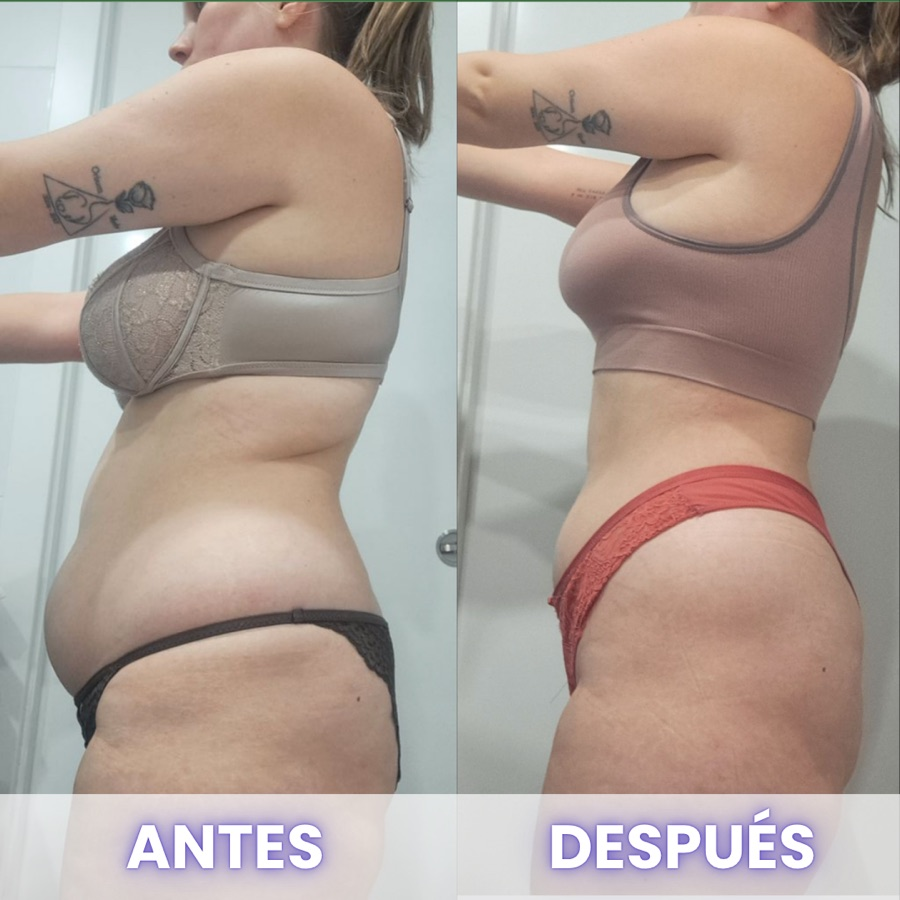
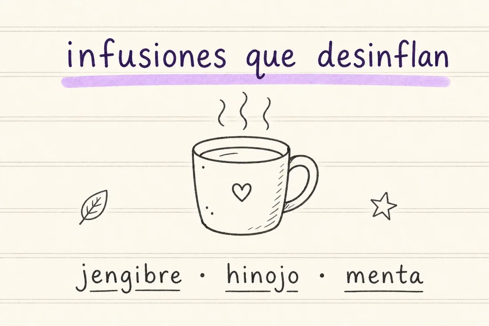
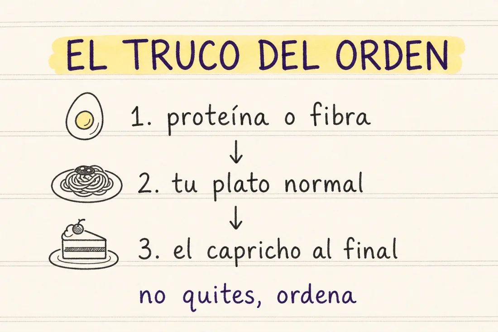

Desinflama tu barriga en 5 días
Sin quitarte tu comida favorita (de verdad). Cinco días, sin pasar hambre y sin renunciar a nada.

Léeme primero
Te levantas plana. A media tarde ya te aprieta el botón del pantalón. Y por la noche te miras de lado y piensas: «parezco embarazada».
Primera verdad: ESO NO SON 5 KILOS QUE HAS COGIDO EN 12 HORAS. ES IMPOSIBLE. No es grasa, es inflamación. Y la inflamación se desactiva muchísimo más rápido que la grasa.
Segunda verdad, y esta te va a gustar: aquí no vas a leer «cómete un brócoli al vapor». Eso no te desinfla, solo te quita las ganas de vivir. En Efecto Mariposa se come lo que te gusta (pan, pasta, tu capricho) con un par de trucos que lo cambian todo. Vamos a ello.
Por qué te hinchas: las 5 causas reales
Comes con prisa y con estrés. De pie, con el móvil, entre reuniones. Tragas aire y digieres en modo supervivencia. No es la comida: es el cómo.
Cenas tarde, pesado y te tumbas encima. La comida más grande a las 22:30 + sofá = fermentando toda la noche. Por eso te acuestas hinchada y te levantas plana.
Te fías de lo «light» y «0%». Refrescos zero, chicles sin azúcar y «comida fit» van llenos de edulcorantes que fermentan y te hinchan más que el propio azúcar. Menudo timo.
Comes en el orden que te hincha. Empezar por el hidrato a pelo dispara el pico de azúcar y la hinchazón. Cambiando el orden (ya verás) el mismo plato deja de inflamarte.
Vives en el «todo o nada». Día de restricción, noche de descontrol. Ese vaivén es lo que más inflama: tu cuerpo nunca sabe qué le va a llegar.
fíjate: ni una de las cinco es «come menos». el problema casi nunca es tu comida favorita. es cómo, cuándo y en qué orden llega ✨
El protocolo de 5 días
DÍA 1 · Hidrata y corta lo que fermenta 💧
- Bebe agua desde que te levantas: un vaso grande al despertar y no pases 2 horas sin beber.
- Aparca estos 5 días lo que fermenta de verdad: refrescos (también zero y light), chicles sin azúcar y alcohol.
- Cámbialos por agua, agua con gas o infusiones de jengibre, hinojo y menta. Sí saben bien, prometido.

aquí va un dibujito a mano ✏️inflamacion-infusiones.webp
DÍA 2 · Cambia CÓMO comes (no QUÉ comes) 🍽️
- Come sentada, sin pantalla, mínimo 10 minutos. Tu pizza sabe igual de bien despacio, y no te hincha.
- Mastica el doble: la digestión empieza en la boca; si tragas entero, fermenta.
- Antes de la comida más estresante, 3 respiraciones lentas. Bajas el cortisol que te infla.
DÍA 3 · El truco del orden (no quites, ordena) ⭐
- Empieza cada comida por la proteína o algo de fibra (un par de bocados). Eso aplana el pico de azúcar y la hinchazón.
- Después, cómete tu plato normal: tu pan, tu pasta, tu arroz. Aquí no se quita nada.
- El capricho o el postre, al final y con calma. Entra igual, pero sin dejarte hinchada.

aquí va un dibujito a mano ✏️inflamacion-truco-del-orden.webp
DÍA 4 · La cena que no te hincha 🌙
- Cena lo que te apetezca, pero adelántala: cada 30 minutos antes cuentan.
- Que lleve proteína de base: te sacia y evita el asalto a la nevera una hora después.
- Ideas reales: tu tosta con huevo, unos tacos, pasta con proteína. Cena de verdad, no castigo.
DÍA 5 · Muévete suave y duerme 😴
- Después de cenar, 10-15 minutos caminando: lo más fácil y potente para desinflar.
- Cierra pantallas 30 minutos antes de dormir; el mal descanso sube el cortisol que te infla.
- Objetivo: dormir 7 horas. NO ES UN LUJO, ES PARTE DEL PROTOCOLO.
Tu tracker de los 5 días
Marca cada día que lo cumplas. Esta página se acuerda de tus casillas, y VERTE TACHAR CASILLAS ENGANCHA MÁS QUE CUALQUIER BÁSCULA.
Lo que te desinfla vs. lo que te hincha
TE DESINFLAN 💚
- Empezar por la proteína
- Un vaso de agua antes
- Comer despacio y disfrutar
- Moverte 10 min después
- Tu capricho, pero temprano
- Dormir tus 7 horas
TE HINCHAN 🚫
- Comer con prisa y de pie
- Saltarte comidas «para compensar»
- El todo o nada
- Cenar pesado y tumbarte
- Refrescos «zero» y light
- Beberte las calorías

¿Quieres que lo hagamos juntas?
Haz estos 5 días y te vas a ver la tripa más plana comiendo lo que te gusta. Pero si te hinchas todos los días desde hace años, hay algo de fondo que resolver. Y eso es justo lo que trabajamos dentro.
Si quieres saber cómo lo hemos hecho con cientos de mujeres que estaban justo donde estás tú hoy, perdiendo grasa comiendo lo que les gusta, sin pasar hambre y sin volver a recuperarlo, escríbeme por Instagram y te lo cuento sin compromiso.
Escríbeme por Instagram 💜mándame un dm a @ashleey.fit y dime «quiero saber más»
y vamos a por tu cambio al 100%. un abrazo, Ashley ✨